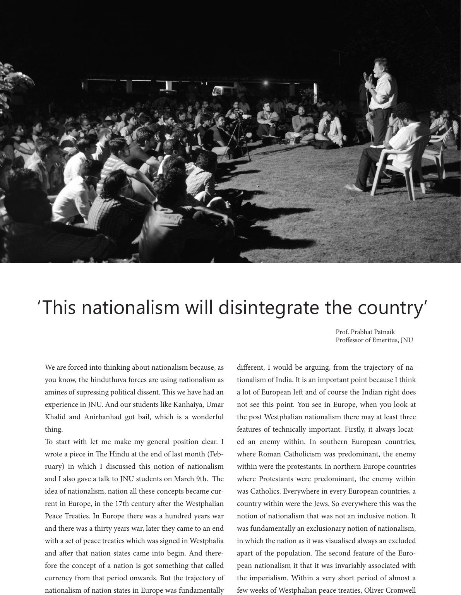

We are forced into thinking about nationalism because, as
you know, the hinduthuva forces are using nationalism as
amines of supressing political dissent. is we have had an
experience in JNU. And our students like Kanhaiya, Umar
Khalid and Anirbanhad got bail, which is a wonderful
thing.
To start with let me make my general position clear. I
wrote a piece in e Hindu at the end of last month (Feb-
ruary) in which I discussed this notion of nationalism
and I also gave a talk to JNU students on March 9th. e
idea of nationalism, nation all these concepts became cur-
rent in Europe, in the 17th century aer the Westphalian
Peace Treaties. In Europe there was a hundred years war
and there was a thirty years war, later they came to an end
with a set of peace treaties which was signed in Westphalia
and aer that nation states came into begin. And there-
fore the concept of a nation is got something that called
currency from that period onwards. But the trajectory of
nationalism of nation states in Europe was fundamentally
dierent, I would be arguing, from the trajectory of na-
tionalism of India. It is an important point because I think
a lot of European le and of course the Indian right does
not see this point. You see in Europe, when you look at
the post Westphalian nationalism there may at least three
features of technically important. Firstly, it always locat-
ed an enemy within. In southern European countries,
where Roman Catholicism was predominant, the enemy
within were the protestants. In northern Europe countries
where Protestants were predominant, the enemy within
was Catholics. Everywhere in every European countries, a
country within were the Jews. So everywhere this was the
notion of nationalism that was not an inclusive notion. It
was fundamentally an exclusionary notion of nationalism,
in which the nation as it was visualised always an excluded
apart of the population. e second feature of the Euro-
pean nationalism it that it was invariably associated with
the imperialism. Within a very short period of almost a
few weeks of Westphalian peace treaties, Oliver Cromwell
‘This nationalism will disintegrate the country’
Prof. Prabhat Patnaik
Proessor of Emeritus, JNU